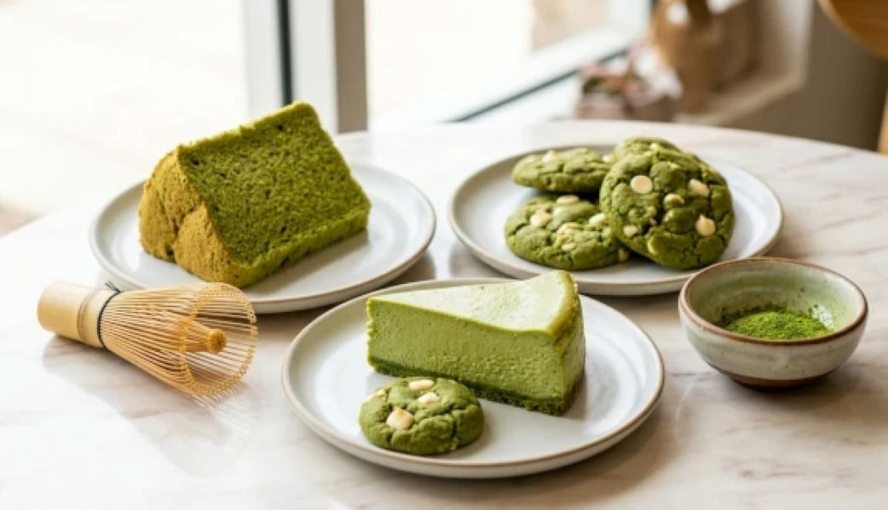
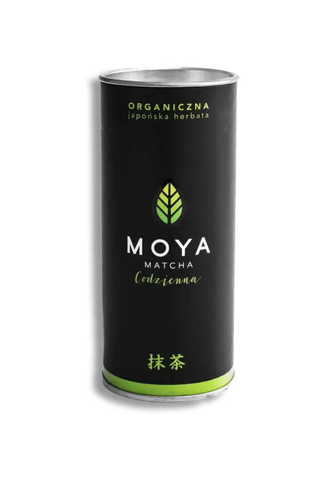

1. Matcha to nie zwykła herbata
W przeciwieństwie do zwykłej herbaty, przy matchy pijesz całe zmielone liście, a nie tylko napar. Dzięki temu dostarczasz więcej składników odżywczych.
2. Matcha była używana przez mnichów
W Japonii buddyjscy mnisi pili matchę podczas medytacji, ponieważ pomagała im utrzymać koncentrację i spokój.
3. Zacienianie krzewów
Na kilka tygodni przed zbiorami krzewy herbaty są przykrywane, aby ograniczyć dostęp światła. Dzięki temu liście mają więcej chlorofilu i intensywny zielony kolor.
4. Matcha i kofeina
Matcha zawiera kofeinę, ale działa inaczej niż kawa. Dzięki L-teaninie energia uwalnia się wolniej i dłużej.
5. Wygląd dobrej matchy
Dobra matcha ma intensywnie zielony kolor. Wyblakła lub żółtawa może oznaczać niższą jakość.


6. Matcha w codziennym życiu
Matcha jest używana nie tylko do picia, ale też do deserów: lodów, wypieków, ciastek i latte.


7. Marka Moya Matcha
Jedną z popularnych marek w Polsce jest Moya Matcha, która oferuje różne rodzaje jakości:
- Codzienna
- Tradycyjna
- Ceremonialna
- Luksusowa
